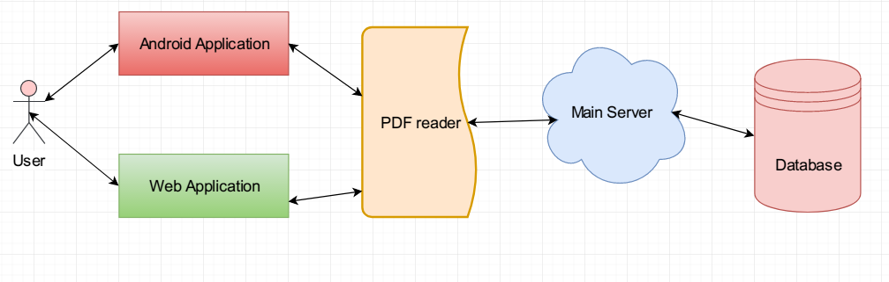

4. Architectural Design
4.1 Approach
The system architecture is designed by iterative and incremental approach. We will consider the five steps of iterative and incremental approach to determine the possible outcomes. And through multiple repetition of the process we can choose the best solution. This solution can be further checked and modified by more iteration and finally producing a solution that matches and fulfills our requirements.
4.2 Diagram
Design Diagram
Our system implementing architecture is simple. Both web application and android application connects to server and server then connects to the database allowing both of the platforms download and upload pdf’s and necessary information such as generated reports and etc. Both platform has their pdf renderers that will render and view the pdf to the user. Below is a visual representation of the system architecture we will use.

Design Pattern
Our document reader with eye tracker system will be developed by using MVC (model-view-controller) design pattern/architectural style. MVC pattern separates presentation and interaction from the system data. The system is structured into three logical components to interact with each other.
- The model component- Handles the data and data flow of the system and performs various operations on data.
- The view component- This component is responsible for how the data is represented to the user and how they interact with the data.
- The controller component- Manages user interaction and passes these interaction to the view and the model.
There are various ways in which to visualize and interact with system data. Same data can be represented differently based on different scenarios. Also when we will need to change the view of any specific part of the system, changing the view will suffice rather we would have to change the whole thing along with data. This will also make code more manageable as the various components are separated and in the same time inter-connected to ensure the date flow, connectivity between the components and full functionality of the system. This pattern differentiates and creates an abstraction between the business logic and data management.
4.3 Description
Components:
Student Component
This component is one of the most important components of the system. In this component many key features will be implemented such as download pdf, and through this component eye tracking will also be taking place.
Faculty Component
This component will be responsible for uploading pdf’s and reviewing reports that were generated by student component.
Eye Tracker component
This key component is solely responsible for implementing and executing the eye tracking algorithm. Through this component system will access specific platform’s camera and detect eye movements through image processing. It will take snapshots periodically which will be used in the generated report.
PDF Reader component
This is a major component of the system of our document reader. Pdf reader component is responsible for rendering the pdf that will be viewed to the users’ end. This component will view the downloaded pdf document so that the user can read it both offline and online.
Report generation component
This component is responsible for generating data from the user’s activity while reading the document. Snapshots taken by the camera component are attached to the report as visual proof about their activities while the document was open.
User authentication & management component
This is the major sub system that is responsible for the security of the Registration and login system using both federated ID and email. It authenticate users and also handles the user management activities such as creating new user accounts, removing accounts from the system etc.